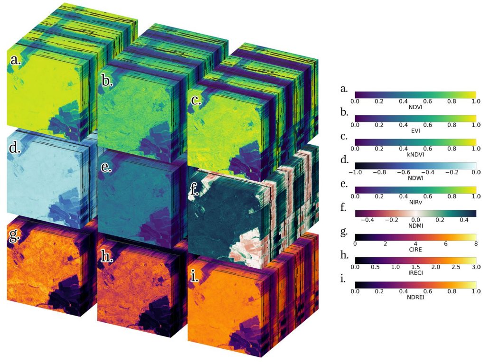

The process of remote sensing, from data collection to final image processing, involves several stages. Here's a detailed description of each stage:
Platform and Sensor Selection: First step is to choose appropriate satellite, aircraft, or unmanned aerial Vehicle (UAV)
platform and hence the sensors onboard on the specific objectives of the remote sensing mission. These sensors then captures data in relevat
spectral bands for the desired applications (example optical, infrared, radar).
Mission Planning and Scheduling: Next step would be to choose the orbits to cover the target area after
considering the lighting conditions, weather and other mission constrains.
Data Acquisition: Then the sensors onboards acquire remote sensing data through capturning the electromagnetic radiation in various wavelengths. When utilizing optical sensors, the collection of data is accomplished by depending on sunlight reflection and absorption. In contrast, with radar sensors, the sensors emit microwave signals, and the captured data comes from the signals that are backscattered.
Telemetry and Data Transmission: In the next step, the acquired data is transmitted to ground stations using telemetry systems. Telemetry data includes details such as the satellite's health, its orientation in space, power levels, and sensor status.
Data Preprocessing: In this step, various data corrections (radiometric and geometric distortions introduced during data acquisition) are done. Atmospheric correction are also done in this step. The normalization and standardization of pixel values are also done for consistency.
Image Registration: Next multiple images from different times or sensors are aligned to a common coordiante system. Also geometric distortions are corrected to enable accurate comparison and analysis.
Image Enhancement: Image emhancement is done to improve the visual quality and highlight specific features using techniques like contrast adjustment and histogram equalization. If required, specific spectral bands are enhanced to emphaseze certain infromation.
Image Classification: Pixels or regions are assigned within the images to predefined classes or land cover types. These are done by using classification algorithms based on spectral, textural and contextual features.
Feature Extraction:Finally relevant features are identified and extracted from the images, such as vegitation indices, water bodeis, or urban areas. Texture analysis and spatially filtering are used for this purpose.
Change Detection: After going through all the above steps, multiple images over times are compared to idnetify changes in land cover or other features. The algorithm is then trained using a training set which includes images from different geographical locations with similar characteristics.
Satellite Data Processing: From Raw Measurements to Calibrated Insights
Let's delve into the details of how satellite data is processed, starting from the raw Level-0 data received by the sensors and then transforming it to Level-1 data.
Satellite Data levels
Within remote sensing and its applications, there are a series of levels that are used to define the amount of processing that has been performed to provide a given dataset. Satellite data is collected at various levels, each representing a different stage of processing and refinement. Here are the common levels of satellite data (reference 1 and reference 2):
Level 0 (L0): Raw Data: Level-0 data refers to the raw data received directly from the satellite sensors. This data is essentially the raw measurements taken by the sensors and detectors onboard the satellite. It is typically in a compressed or encoded format. The first step is to decompress or decode the raw data into a usable format for further processing. It includes unprocessed digital counts or voltage measurements. L0 data is transmitted to ground stations. It is unlikely that we will work with this level of data, especially for more modern sensors, as this data lacks information such as geo-referencing and time-referencing ancillary information. Let's understand the basic concepts here:
Electromagnetic Signals:
Satellite sensors detect electromagnetic signals reflected or emitted from the Earth's surface.
These signals cover various wavelengths depending on the sensor's design (e.g., visible light, infrared, microwave).
Detection and Digitization:
The sensors convert these electromagnetic signals into electrical signals. For example, photodetectors in optical sensors generate a voltage or current proportional to the intensity of the incoming light.
These analog signals are then digitized by onboard analog-to-digital converters (ADCs). The digitization process samples the analog signal at discrete intervals and quantizes the signal into digital counts, which are integers representing the signal’s amplitude.
Pixel Format:
The digitized signals are organized into a grid of pixels, where each pixel represents a specific geographical area on the Earth's surface.
Each pixel contains a digital number (DN), which is a quantized value corresponding to the detected signal's intensity.
Level 1 (L1): Level 1 is further divided into A and B. Level 1A is the full resolution sensor data with time-referencing, ancillary information including radiometric and geometric calibration coefficients and georeferencing parameters computed and added to the file. Level 1B is the stage following the application of the parameters appended to the files at L1A (such as instrument calibration coefficients). This level also includes quality and classification flags.
Decompress or decode the raw satellite data received from the sensor.
Apply initial sensor-specific calibration algorithms to the raw data.
Perform time-referencing and append ancillary information, including radiometric and geometric calibration coefficients and georeferencing parameters.
Conduct quality checks to identify and flag any missing or corrupted data.
Organize and store the data in a standard hierarchical format, such as HDF or NetCDF.
Level 1B (Sensor Data Record):
Apply radiometric calibration to convert the raw sensor counts into physical units of radiance or reflectance.
Perform geometric corrections and geolocation to assign geographic coordinates (latitude, longitude) to each pixel.
Apply sensor-specific corrections for various effects (e.g., detector nonlinearity, spectral response, stray light).
Implement cloud detection and masking algorithms.
Example: for ocean colour this would be often referred to as the “top of atmosphere (TOA)” radiance [mW.m-2.sr-1.nm-1] or a meteorologist might use Level 1b visible wavelength imgery to monitor cloud formation associated with a tropical cyclone.
Level 2 (Environmental Data Record): Level 2 refers to derived geophysical variables. This will have required processing to remove the atmospheric component of the signal, as well as the application of algorithms to measurements to generate other products. This is the level at which many users will use the data, particularly if they are interested in event scale processes that require the highest time and space resolution available from the data stream.
Perform atmospheric correction to remove the effects of atmospheric scattering and absorption.
Apply retrieval algorithms to derive geophysical parameters (e.g., land surface temperature, ocean color, aerosol optical depth) from the calibrated and atmospherically corrected radiances or reflectances.
Implement quality control checks and flagging of retrieved parameters based on predefined thresholds and conditions.
Apply additional corrections or adjustments specific to the derived parameter (e.g., bidirectional reflectance distribution function (BRDF) correction for land surface products).
Example: in the case of ocean colour, the core level 2 product is the water-leaving reflectance, whilst chlorophyll a is the commonly derived product. For OLCI these are available both at full resolution (300m pixel size) and reduced resolution (1km pixel size).
Level 3 & 4 : Levels 3 and 4 refer to binned and or merged/filled versions of the level 2 data for a given spatial or temporal resolution.
Level 3 (Geophysical Data Record): Level 3 data are Level 2 data that have been mapped on a uniform space-time grid, and thus have been averaged over space and/or time.
Spatially and temporally aggregate or grid the Level 2 products into regular grids or maps.
Apply additional filtering, smoothing, or gap-filling techniques to enhance the data quality and continuity.
Implement compositing or mosaicking algorithms to create multi-day, multi-sensor, or multi-resolution products.
Perform additional quality control and flagging based on the aggregated data.
Example: the VIIRS Level 3 AOD product is a gridded composite at 0.1° or 0.25° resolution, available daily or as a monthly average; it is derived from the daily 750 m resolution Level 2 AOD data.
Assimilate the Level 2 or Level 3 products into numerical models or data assimilation systems.
Perform model simulations or forecasts using the satellite data as input or constraints.
Derive higher-level products or analyses by combining satellite data with other data sources (e.g., in-situ measurements, model outputs).
Implement validation and uncertainty quantification procedures for the model outputs or derived products.
Example: The level 2 data from the Copernicus Marine Data Stream (CMDS) feeds in to a further component of Copernicus (the Copernicus Marine Environmental Monitoring Service - CMEMS). This data can be useful for those wanting better spatial coverage, and those looking at marine processes that happen over longer time periods. In particular merged data can be used to generate long time series from multiple sensors, which is essential for climate studies
It's important to note that not all satellite data goes through all these levels. The processing levels that data undergoes depend on the specific requirements of the remote sensing application
and the type of data needed for analysis. Researchers and analysts choose the appropriate level of data based on the goals and objectives of their studies.
Note on Cal/Val (calibration/validation) activities:
So before moving to the main pre-processing step, we may also need to do following calibration:
Vicarious calibration: Vicarious calibration is a technique used to calibrate satellite sensors by comparing their measurements with well-characterized ground-based or airborne measurements over specific calibration sites. These sites are carefully selected and characterized for their stable and well-known surface properties, such as reflectance or radiance. The process typically involves:
Collecting simultaneous ground-based or airborne measurements over the calibration site at the time of satellite overpass.
Using radiative transfer models to simulate the at-sensor radiance or reflectance based on the ground-based measurements and atmospheric conditions.
Comparing the simulated and satellite-measured radiances/reflectances to derive calibration coefficients or adjustments for the satellite sensor.
Cross-calibration with other satellites: Cross-calibration involves comparing the measurements from one satellite sensor with those from another well-calibrated satellite sensor, typically operating in similar spectral bands. This helps ensure consistency between different satellite missions and maintains long-term data records. The process involves:
Applying appropriate corrections for spectral band differences, viewing geometry, and atmospheric conditions.
Comparing the radiance or reflectance measurements from the two sensors over the common targets.
Deriving cross-calibration coefficients or adjustments to harmonize the measurements between the two sensors.
Product validation using ground-truth data:
This activity involves comparing satellite-derived geophysical products (e.g., atmospheric, land, or ocean products) with ground-based or in-situ measurements to assess their accuracy and validate the retrieval algorithms. The process typically includes:
Collecting ground-truth measurements of the geophysical parameter of interest using various instruments and techniques (e.g., weather balloons, buoys, field campaigns).
Co-locating and matching the ground-based measurements with the satellite observations in space and time.
Applying appropriate corrections or adjustments to account for spatial and temporal differences between the satellite and ground-based measurements.
Statistically analyzing the differences between the satellite products and ground-truth data to quantify uncertainties, biases, and other performance metrics.
Using the validation results to refine and improve the satellite retrieval algorithms or flag potential issues with the satellite products.
Data Processing
Level 0 (L0) data represents the raw, unprocessed data directly received from a satellite's sensors. Transforming Level 0 data into Level 1 and higher levels involves several essential steps to convert the raw sensor measurements into physically meaningful units. Here's a step-by-step process for this transformation:
The transformation from level-0 to level-1 involves converting the raw sensor data into calibrated and corrected data. This process typically includes the following steps:
Radiometric Calibration: This step converts the digital counts or voltages recorded by the sensor into physical units of radiance or reflectance. This is done by applying calibration coefficients that are determined during sensor calibration. The calibration coefficients account for the sensor's sensitivity and response to different wavelengths of radiation. The digital counts (DN), recorded by sensors are converted to radiance using the following equation:
$$L = (\text{DN}- \text{Offset})\times \text{Gain}$$
where
\(L\) is radiance (TOA spectral radiance) and is typically in units of \(W/(m^2 ~\text{srad}~ \mu \text{m})\),
DN is a dimensionless integer and known as digital counts or Digital Number or raw sensor count (DN). It has a value in the range of 0 to 65535 for a 16-bit sensor,
Offset (an additive calibration coefficient that accounts for the sensor's dark current or instrument offset) and,
Gain = A multiplicative calibration coefficient that accounts for the sensor's gain or sensitivity and units depends on the calibrated quantity (radiance or reflectance).
For radiance: \((W/(m^2 ~\text{sr}~ \mu \text{m})) / \text{count}\)
For reflectance: Unitless (reflectance values are inherently dimensionless)
It's important to note that the exact form of the calibration equation and the units of the coefficients (offset and gain) may vary depending on the specific satellite sensor and calibration methodology used. The provided equation is a simplified example, and more complex calibration procedures may involve additional terms or different unit conventions.
Sensor Correction: This step corrects for sensor-specific errors and non-linearities. This may involve removing sensor bias, correcting for non-linear responses, and applying gain corrections. The goal is to ensure that the sensor data accurately represents the incoming radiation.
Geometric Correction: This step corrects for distortions caused by the sensor's optics and the earth's curvature. This is done by applying a geometric transformation to the data to align it with a reference map or coordinate system. The transformation accounts for factors such as sensor orientation, lens distortion, and earth's projection.
Geometric correction is performed using a variety of techniques, such as polynomial fitting, map projection, and terrain correction. The goal is to remove distortions caused by the sensor's optics and the earth's curvature and to align the data with a reference map or coordinate system. For more details see
Remote sensing image processing page.
Geometric Registration: This step aligns multiple level-1 data sets to a common coordinate system. This is necessary for multi-temporal or multi-sensor analyses, where data from different sources or time periods needs to be compared or overlaid.
It is performed by assigning geographic coordinates (latitude and longitude) to each pixel in the image. This is done by matching the image to a reference map or coordinate system. For more details see
Remote sensing image processing page.
Level-1 to Level-2 Transformation:
The transformation from level-1 to level-2 involves deriving physical properties of the earth's surface and atmosphere from the calibrated and corrected data. This process typically includes the following steps:
Atmospheric Correction: This step removes the effects of the atmosphere on the level-1 data. This is done by modeling the interaction of radiation with the atmosphere, including scattering, absorption, and emission. The goal is to obtain a more accurate representation of the earth's surface reflectance.
Atmospheric correction is performed using a variety of techniques, such as the Sen2Cor algorithm or the ACOLITE algorithm. The goal is to remove the effects of the atmosphere on the level-1 data to obtain a more accurate representation of the earth's surface reflectance.
For more details see
Remote sensing image processing page.
Atmospheric Parameter Retrieval: This step retrieves atmospheric parameters, such as aerosol concentration, ozone concentration, and water vapor content, from the level-1 data. This is done using algorithms that analyze the spectral characteristics of the radiation.
Surface Property Retrieval: This step derives physical properties of the earth's surface, such as land cover, vegetation cover, and water content, from the level-2 data. This is done using algorithms that analyze the spectral reflectance of the surface.
Surface property retrieval is performed using a variety of algorithms, such as the normalized difference vegetation index (NDVI) algorithm or the land surface temperature (LST) retrieval algorithm. The goal is to derive physical properties of the earth's surface, such as land cover, vegetation cover, and water content, from the level-2 data.
For more details see
Remote sensing image processing page.
Data Validation: This step ensures the quality and accuracy of the level-2 data. This involves checking for outliers, artifacts, and inconsistencies in the data.
Level-2 to Level-3 Transformation:
The transformation from level-2 to level-3 involves integrating level-2 data into thematic maps or geophysical products. This process typically includes the following steps:
Mosaicking: This step combines multiple level-2 data sets into a seamless mosaic. This is necessary for large-scale analyses, where data from different regions or time periods needs to be combined.
Mosaicking is performed by combining multiple level-2 data sets into a seamless mosaic. This is necessary for large-scale analyses, where data from different regions or time periods needs to be combined.
For more details see
Remote sensing image processing page.
Geolocation and Projection: This step assigns geographic coordinates (latitude and longitude) to the level-3 data and projects it onto a standard map projection. This allows the data to be accurately displayed and analyzed in a geographic context.
Geolocation and projection are performed by assigning geographic coordinates and projecting the data onto a standard map projection. This allows the data to be accurately displayed and analyzed in a geographic context.
For more details see
Remote sensing image processing page.
Thematic Mapping: This step generates thematic maps that represent specific themes or characteristics of the earth's surface. This may involve classifying land cover, identifying vegetation types, or mapping surface water bodies.
Thematic mapping is performed by classifying each pixel in the image based on its spectral characteristics. This may involve classifying land cover, identifying vegetation types, or mapping surface water bodies.
For more details see
Remote sensing image processing page.
Geophysical Product Generation: This step generates geophysical products, such as digital elevation models (DEMs) or land surface temperature maps. These products provide quantitative information about the earth's surface and atmosphere.
Level-3 to Level-4 Transformation:
The transformation from Level-3 to Level-4 involves deriving higher-level information and insights from the thematic maps and geophysical products generated at Level-3. This process typically includes the following steps:
Data Integration and Analysis: This step integrates multiple Level-3 data sets and other relevant information sources, such as ancillary data, climate models, and socio-economic data. This integration allows for a more comprehensive understanding of the Earth's system and its interactions.
Data integration and analysis involves integrating multiple Level-3 data sets and other relevant information sources, such as ancillary data, climate models, and socio-economic data. This integration allows for a more comprehensive understanding of the Earth's system and its interactions
For more details see
Remote sensing image processing page.
Change Detection and Characterization: This step identifies and characterizes changes in the Earth's system over time. This may involve analyzing trends in land cover, vegetation cover, or water resources, or detecting and monitoring deforestation, urbanization, or natural disasters.
Change detection and characterization involves identifying and characterizing changes in the Earth's system over time. This may involve analyzing trends in land cover, vegetation cover, or water resources, or detecting and monitoring deforestation, urbanization, or natural disasters.
For more details see
Remote sensing image processing page.
Modeling and Simulation: This step develops models to simulate the behavior of the Earth's system and predict future trends. This may involve using climate models, land use models, or hydrological models to understand and anticipate changes in the environment.
Modeling and simulation involves developing models to simulate the behavior of the Earth's system and predict future trends. This may involve using climate models, land use models, or hydrological models to understand and anticipate changes in the environment.
For more details see
Remote sensing image processing page.
Uncertainty Assessment: This step quantifies the uncertainty associated with Level-3 and Level-4 data products. This is important for understanding the limitations and reliability of the information and for making informed decisions based on the data.
Uncertainty assessment involves quantifying the uncertainty associated with Level-3 and Level-4 data products. This is important for understanding the limitations and reliability of the information and for making informed decisions based on the data.
For more details see
Remote sensing image processing page.
Decision Support: This step provides decision-makers with actionable insights derived from Level-3 and Level-4 data. This may involve developing recommendations for sustainable land use practices, disaster preparedness strategies, or climate change adaptation plans.
Decision support involves providing decision-makers with actionable insights derived from Level-3 and Level-4 data. This may involve developing recommendations for sustainable land use practices, disaster preparedness strategies, or climate change adaptation plans.
For more details see
Remote sensing image processing page.
The Level-3 to Level-4 transformation represents a critical step in converting raw remote sensing data into actionable information that can be used to address environmental challenges, support sustainable development, and inform decision-making processes.
The transformation of level-0 data to level-4 data is a complex process that involves a series of mathematical operations and algorithms. The specific equations and techniques used will depend on the type of sensor, the earth's surface features, and the atmospheric conditions. However, the general principles of calibration, correction, geolocation, atmospheric correction, surface property retrieval, thematic mapping, and geophysical product generation are applicable to most remote sensing data processing workflows.
Voltage values in Level-0 data
In the context of collecting raw data from satellite sensors, "voltage values" refer to one of the ways that certain types of sensors record measurements.
When a sensor detects a physical quantity, such as light intensity or temperature, it often generates an electrical signal proportional to that quantity.
This electrical signal is typically in the form of voltage.
Here's a more detailed explanation:
Sensor Output: Satellite sensors are designed to capture various types of data, such as imagery, temperature, or radiation levels.
When these sensors interact with the environment, they produce an electrical signal that corresponds to the measured quantity.
Voltage as a Signal: In many cases, this electrical signal is in the form of voltage. The magnitude of the voltage signal is directly
related to the quantity being measured. For example, in an optical sensor, the amount of light detected can be translated into a voltage signal where higher
light intensity corresponds to higher voltage values.
Analog-to-Digital Conversion: Before transmitting the data, the analog voltage signal is often converted into a digital representation.
This process is called analog-to-digital conversion (ADC). In ADC, the continuous analog voltage is sampled at discrete intervals and assigned digital values
(digital counts).
Digital Counts: These digital values, referred to as "digital counts" or simply "counts," are then transmitted as part of the raw data.
Each count represents a specific voltage level recorded by the sensor during its measurement.
For instance, if you have an optical sensor on a satellite that measures sunlight intensity, it might generate voltage values as it detects varying levels
of sunlight. These voltage values are then digitized and transmitted as part of the raw data to ground stations or receivers for further processing and analysis.
In summary, "voltage values" in this context refer to the electrical signals generated by satellite sensors to represent the physical quantities they are
designed to measure. These signals are converted into digital counts for transmission and subsequent data processing.
Reflectance
Reflectance in remote sensing is calculated by measuring the amount of electromagnetic radiation (light) that is reflected from a surface. The reflectance values are
typically expressed as a percentage or a unitless fraction. The formula for calculating reflectance is as follows:
$$\text{Reflectance} = \frac{\text{Reflected Radiance}}{\text{Incident Radiance}} \times 100\%$$
where:
Reflectance: The percentage of light that is reflected by a surface. It indicates how much of the incident light is returned.
Reflected Radiance: The amount of electromagnetic radiation (light) that is reflected by the surface and measured by the sensor. It is often
represented in radiance units.
Incident Radiance: The amount of electromagnetic radiation (light) that reaches the surface. It is the incoming light before interacting with the surface.
Reflectance values range from 0% (no reflection) to 100% (complete reflection). A reflectance of 0% indicates that the surface absorbs all incident light, while a
reflectance of 100% means that the surface reflects all incident light.
In practice, the reflectance values are often corrected for atmospheric effects and sensor characteristics. The reflectance calculation is an essential step in
converting raw remote sensing data into meaningful information that can be used for various applications, such as land cover classification, vegetation health
assessment, and environmental monitoring.
The accuracy of reflectance calculations depends on factors such as sensor calibration, atmospheric correction, and the spectral characteristics of the surface
being observed. Remote sensing instruments equipped with different spectral bands capture the reflected radiance at specific wavelengths, allowing scientists to
analyze and interpret the Earth's surface properties.
Spectral Indices in Remote Sensing
Spectral indices in remote sensing are mathematical combinations of reflectance values from different spectral bands. These indices help highlight specific
features or characteristics of the Earth's surface, such as vegetation health, water content, or soil moisture.

Spectral indices mini cubes computed from Sentinel-2 displaying a 2.56 km radius around the DE-Hai
site (Image credit: Reference paper by David Montero et. al.)
Here are a few commonly used spectral indices:
Purpose: NDVI is widely used to assess vegetation health and density. Healthy vegetation reflects more near-infrared (NIR) light and
absorbs more red light.s
NIR (Near-Infrared): Reflectance in the near-infrared region of the electromagnetic spectrum.
R i.e. Red: Reflectance in the red region of the electromagnetic spectrum.
Purpose: MSI helps identify areas experiencing moisture stress by leveraging differences in water absorption in the near-infrared and shortwave infrared regions.
These indices are calculated using the reflectance values from specific spectral bands, often captured by satellite or airborne sensors.
By applying these indices, remote sensing analysts can extract valuable information about the environment, monitor changes, and gain insights into various ecological and agricultural parameters.
Remote Sensing – Spectral Indices – Applications
Remote sensing and spectral indices have various applications, especially in the realm of data science and analytics. Spectral indices are mathematical calculations applied to remote sensing data to extract meaningful information. Some applications include:
Vegetation Monitoring: Spectral indices like NDVI (Normalized Difference Vegetation Index) are widely used to assess vegetation health and monitor changes over time.
Crop Health Assessment: Remote sensing helps in evaluating crop conditions, detecting diseases, and optimizing agricultural practices using indices such as NDVI or EVI (Enhanced Vegetation Index).
Land Cover Classification: Spectral indices contribute to accurate land cover mapping, aiding in urban planning, environmental monitoring, and resource management.
Water Quality Monitoring: Spectral indices can be employed to assess water quality in lakes, rivers, and oceans by detecting changes in water properties.
Forest Management: Remote sensing assists in forest inventory, monitoring deforestation, and assessing overall forest health using indices tailored for vegetation analysis.
Climate Change Studies: Spectral indices contribute to monitoring environmental changes, such as shifts in temperature, precipitation, and vegetation patterns, supporting climate change research.
Disaster Management: Remote sensing helps in assessing and managing natural disasters like floods, wildfires, and earthquakes by providing real-time data for decision-making.
In the context of your interests in data science, analytics, and data engineering, integrating and analyzing remote sensing data using the mentioned tools and technologies can enhance insights and support decision-making in these domains.
Radiance or Reflectance:
Radiance and reflectance are two fundamental radiometric quantities used in remote sensing and satellite imagery to describe the properties of the reflected
or emitted electromagnetic radiation from surfaces on Earth. These quantities are used to quantify the amount of light or radiation observed by remote sensing
sensors. Here's an explanation of each, along with their formulas:
Radiance (L):
Definition: Radiance measures the amount of electromagnetic radiation per unit
area, per unit solid angle, and per unit wavelength interval. It describes the radiative energy
received by a sensor from a particular direction and wavelength.
Units: Radiance is typically expressed in watts per square meter per
steradian per micrometer (W/(m²·sr·μm)).
Formula: The formula for radiance is given by:
\[L(\lambda) = \frac{\pi \cdot R(\lambda)}{E(\lambda)}\]
where:
L(λ) is the radiance at wavelength λ.
R(λ) is the radiance received by the sensor from the target.
E(λ) is the effective spectral radiance of the sensor.
In the case of satellite measurments, the objective of ocean sensors is to retreive the spectral distribution of upwelling radiance
just above the sea surface, which is termed the water leaving radiance (Lw). However, the sensors actually measure the Top
of Atmoshphere (TOA) radiance Lt and so the contribution resulting from processes such as the atmosphere such as the
atmoshphere's scattering and absorption needs to be accounted for -termed Atmospheric Correction (AC).
$$L_t(\lambda) = L_r(\lambda)+ L_a(\lambda)+L_{ra}(\lambda)+t(\lambda)L_{wc}(\lambda)+T(\lambda)L_{g}(\lambda)+t(\lambda)t_0(\lambda)\text{cos}(\theta_0)
L_{wn}(\lambda)$$
where
Lr due to Rayleigh scattering
La due to aerosol scattering
Lra due to interaction aerosols and molecules
Lwc due to interaction between white caps
Lg due to interaction between glint.
t and t0 are diffusive transmmitances of the atmohsphere from the surface to the senor and from the sun to the surface.
T is the direct transmittance from surface to sensor
θ0 is the solar zenith angle
Lwn(λ) is the normalized water leaving radiance.
Reflectance (ρ) or Reflectance Factor (RF):
Definition: Reflectance measures the ratio of reflected light from a surface to the incident light upon it. It quantifies how much of
the incoming radiation is reflected by the surface. Reflectance is usually expressed as a dimensionless value between 0 and 1, but it can be multiplied
by 100 to express it as a percentage.
Units: Reflectance is a dimensionless quantity or percentage.
Formula: The formula for reflectance is given by:
$$
\rho(\lambda) = \frac{L_{\rm reflected(\lambda)}}{L_{\rm incident(\lambda)}}
$$
where:
ρ(λ) is the reflectance at wavelength λ.
Lreflected(λ) is the radiance of the reflected light from the target.
Lincident(λ) is the radiance of the incident light on the target.
The calculation of reflectance often involves radiometric calibration to convert sensor radiance measurements to physical units and account for atmospheric
effects. Reflectance is an important quantity in remote sensing because it allows for the comparison of data collected by different sensors or at different
times, making it a valuable tool for monitoring changes in land cover, vegetation health, and other Earth surface properties.
Note that the specific calculation of reflectance can be more complex in practice, taking into account various factors like atmospheric correction, sensor
characteristics, and surface properties. The formula provided here is a simplified representation, and in practice, detailed algorithms and corrections may
be applied to obtain accurate reflectance values from remote sensing data.
Calculation of physical parameters from the Radiance:
Once you have preprocessed raw data received from a remote sensing satellite and calculated radiance, you can use this radiance data to derive several
important physical parameters and information about the Earth's surface and atmosphere. The specific parameters you can calculate depend on the type of
remote sensing data, the spectral bands used, and the sensors' characteristics. Here are some common physical parameters that can be derived from radiance data:
Surface Temperature:
Radiance data in thermal infrared bands can be used to calculate the surface temperature of the Earth's features. This is essential for
applications like land surface temperature monitoring, agriculture, and urban heat island analysis.
Vegetation Indices:
Radiance data in visible and near-infrared bands can be used to calculate vegetation indices such as the Normalized Difference Vegetation
Index (NDVI) or Enhanced Vegetation Index (EVI). These indices provide information about vegetation health, density, and vigor.
Ocean Color Parameters:
Radiance data over water bodies can be used to calculate ocean color parameters such as chlorophyll-a concentration, water turbidity, and
suspended particulate matter. These parameters are crucial for marine and coastal studies.
Aerosol Optical Depth (AOD):
Radiance data can be used to estimate the AOD, which quantifies the amount of aerosols (dust, smoke, pollution) in the atmosphere. AOD is
vital for studying air quality, climate modeling, and visibility assessments.
Atmospheric Profiles:
Radiance data can be used in conjunction with radiative transfer models to derive vertical profiles of atmospheric parameters, including
temperature, humidity, and aerosol content. These profiles are valuable for atmospheric research and weather forecasting.
Snow Cover and Albedo:
Radiance data can be used to estimate snow cover extent and calculate surface albedo, which measures the reflectivity of the Earth's surface.
These parameters are essential for climate studies and snowmelt modeling.
Land Surface Emissivity:
For thermal infrared data, you can calculate land surface emissivity, which is essential for accurate surface temperature retrieval and energy
balance studies.
Land Cover Classification:
Radiance data can be used for land cover classification and land use mapping, providing information on the types of land features present in a
particular area.
Cloud Properties:
Radiance data can be used to retrieve cloud properties such as cloud height, cloud type, and cloud cover fraction. This information is vital
for weather forecasting and climate studies.
Surface Roughness:
Radiance data can be used to estimate surface roughness, which is useful for applications like agriculture, hydrology, and soil moisture monitoring.
It's important to note that the process of deriving these physical parameters often involves complex radiative transfer models, atmospheric correction, and
calibration procedures. Additionally, the availability of specific bands and sensors on the remote sensing satellite can impact the types of parameters that
can be calculated. Therefore, the choice of satellite and sensor should align with the specific objectives of your remote sensing analysis.
Calculation of surface temperature:
Surface temperature is often calculated using radiance data acquired in the thermal infrared (TIR) spectral range. The process involves several steps,
including atmospheric correction and radiative transfer modeling. Here's an overview of how surface temperature is calculated from radiance data:
Radiance Measurement:
Radiance data is collected by remote sensing instruments operating in the TIR spectral range. These sensors capture the thermal radiation
emitted by the Earth's surface in the form of radiance values.
Atmospheric Correction:
Atmospheric correction is a critical step because the atmosphere absorbs and scatters thermal radiation. To calculate surface temperature
accurately, you need to remove the atmospheric effects. This is typically done using radiative transfer models or atmospheric profile data.
Emissivity Correction:
Surface emissivity is a measure of how efficiently a surface emits thermal radiation. It can vary depending on the material and the wavelength
of observation. To calculate surface temperature, you need to know or estimate the emissivity of the surface in the TIR band. Emissivity values
are typically assigned based on land cover classes or measured in the field.
Planck's Law:
Planck's law describes the relationship between radiance, temperature, wavelength, and emissivity. It is used to relate the radiance measured
by the sensor to the surface temperature and emissivity. The formula for Planck's law is:
Iterative Optimization:
Calculating surface temperature from radiance data involves an iterative optimization process. Given the measured radiance, known or estimated
emissivity, and the Planck's law equation, an iterative optimization algorithm is used to find the temperature that best fits the observed radiance.
This is typically done for each pixel in the image.
Output:
The result of this process is a surface temperature map, where each pixel represents the estimated temperature of the corresponding area on
the Earth's surface.
It's important to note that accurate surface temperature retrieval can be influenced by various factors, including atmospheric conditions, sensor
characteristics, and emissivity assumptions. Therefore, careful calibration, validation, and consideration of these factors are essential to ensure
the reliability of the calculated surface temperatures in remote sensing applications.
Note:
Power/Radiation Flux: The rate at which energy is transferred per time t is known as power:
$$P = \frac{dQ}{dt} ~~~~[J s^{-1}] = W$$.
When speaking about radiant power that is emitted by, passing through, or incident on a particular surface, the term flux ϕ is more commonly used.
Flux Density: The term flux density E refers to the spatial density of radiant power. It is defined as the infinitesimal amount
of radiant power
passing through an infinitesimal surface element dA that is aligned normal to a direction θ
and located at a position of interest.
$$dE(\vec{r}, \vec{\theta}) = \frac{d\phi(\vec{r}, \vec{\theta})}{dA}~~~ [W m^{-2}]$$
Radiance: The radiance, i.e., a measure of the radiant intensity that originates from a small unit area dA⊥
(aligned normal to the direction θ of interest) rather than from a single point:
$$L(\vec{r}, \vec{\theta}) = \frac{d\phi^2(\vec{r}, \vec{\theta})}{dA^\perp d\Omega}$$
The quantity radiance is a quantity that is characteristic for a specific point
and a direction θ. It is defined as the amount of flux passing through a unit area A⊥ (centered at and aligned normal to θ) into a solid angle Ω around the direction of θ.